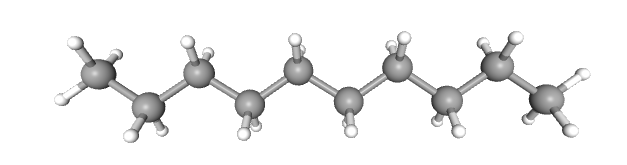
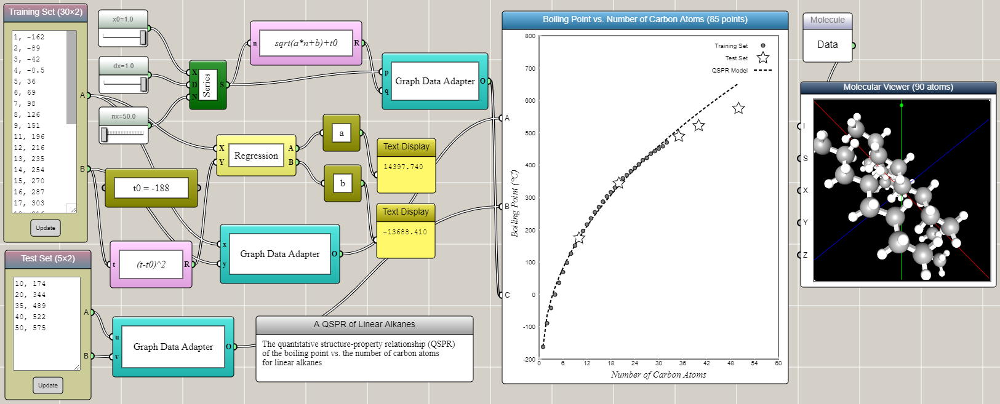

Finding Quantitative Structure-Property Relationships using iFlow
Predict the boiling points of linear alkanes with a QSPR model built visually in iFlow — then connect the dots with molecular dynamics in AIMS.
In chemistry, quantitative structure–property relationship (QSPR) models are regression models that relate a set of structure variables of a molecule to one of its properties. Students can use the QSPR method as a scientific inquiry tool to: 1) ask a question related to a chemical property or biological activity, 2) collect information about relevant molecules from public databases to prepare a training set, 3) find patterns in the training set and build a mathematical model to represent them, 4) use the model to predict the properties of other molecules, 5) validate the results with a test set, and 6) repeat steps 2-5 to refine the model as needed. Through these steps, students learn the basic ideas and procedures of machine learning as a prediction tool to solve scientific problems. In this article, we show how iFlow can be used to create a QSPR model using a simple, well-known example in organic chemistry.

The boiling points of linear alkanes
Linear alkanes are also known as straight-line alkanes because the alignment of the carbon atoms tends to be in a straight line. The chemical formula of linear alkanes is CnH2n+2. An interesting phenomenon is that the boiling point of a linear alkane increases with respect to the number of carbon atoms it contains (n). The data can be found from here. We can type the data into an Array Input block in iFlow as shown in the image below. After some tinkering in iFlow, it turns out that a simple QSPR model as follows can satisfactorily predict the boiling points of other linear alkanes close to or within the range of the training set.
T = T0+√(an+b)
where T is the boiling point, T0 = -188, and the coefficients a and b are determined by the linear regression of transformed training set using (T-T0)2. Interestingly, the QSPR model shows a square root, rather than linear, dependence of the boiling point on the number of carbon atoms. Not surprisingly, the accuracy of the prediction gradually decreases as the extrapolation goes further away from the training set.

The training set and the test set are provided through two Array Input blocks and connected to two different ports of a Space2D block, respectively. A Regression block is used to perform the linear regression for the training set that is transformed using the square formula mentioned above. The results are immediately used to generate the predicted data in conjunction with a Series block and a Univariate Function block. Connected to another port of the Space2D block, the predicted data is then overlaid onto the graph for comparison with the training and test sets. Note that we deliberatly include in the test set two higher alkanes (C10H22 and C20H42) that are within the range of (but not included in) the training set.
Molecular modeling can help students develop a causal understanding about the molecular mechanisms underlying the above QSPR. For example, the following molecular dynamics simulations based on our AIMS platform show the states of C2H6 and C10H22 molecules at 300 K. The dashed lines represent the attractive London dispersion forces within each pair. Students observe from molecular dynamics simulations that longer alkanes separate from each other at a higher temperature, suggesting that the substance that they represent has a higher boiling point.
Note: Don't run both simulations at the same time as that would likely slow down both significantly. Chrome or Edge are recommended.
Such an interactive simulation visualizes the thermodynamic origin of the higher boiling point, but the explanation of the square-root relationship revealed by the QSPR model requires much deeper investigations.
← Back to iFlow